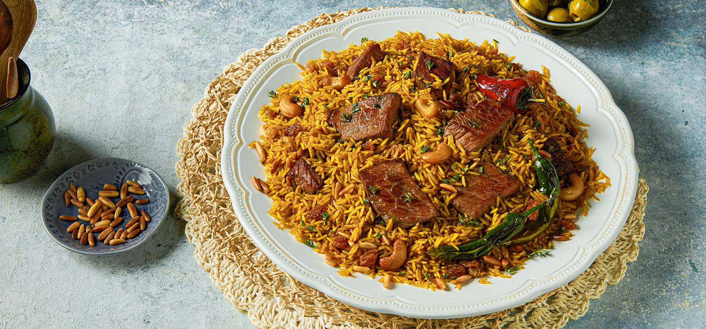
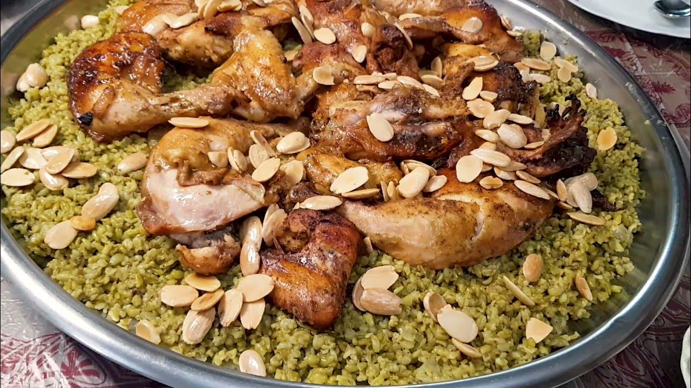

| SF-001 |
وجبة سمك مشوي |
110000 |
|
|
المطبخ: المصري | تصنيف الطعام: مأكولات بحرية
المكونات:
- 4 سمكات بوري أحمر، مغسول ومنظف.
- بضعة أوراق من الأوريجانو الطازج، مقطعة.
- 1 ملعقة صغيرة من ملح الطعام.
- 1 ملعقة صغيرة من الفلفل الأسود المطحون.
الصلصة:
- 1 ملعقة كبيرة من زيت الزيتون.
- 3 فصوص ثوم مقشرة ومقطعة بشكل ناعم.
- 1 حبة فلفل أحمر طازج، منزوعة البذور ومقطعة إلى شرائح رفيعة.
- بضعة أغصان من إكليل الجبل الطازجة.
- 6 حبات طماطم طرية، مفرومة.
- 1/2 ليمونة معصورة.

|
| SF-002 |
وجبة كوسا محشي |
50000 |
|
|
المطبخ: شرقي | تصنيف الطعام: محاشي
المكونات:
- كوسا طازج محفور.
- أرز قصير الحبة مغسول.
- لحم مفروم ناعم.
- ملح،فلفل،بهارات مشكلة.
- صلصة طماطم وثوم ونعناع يابس للمرق.

|
| SF-003 |
يبرق |
75000 |
|
|
المطبخ: شرقي | تصنيف الطعام: يبرق
المكونات:
- ورق عنب أخضر أو مكبوس.
- أرز ولحم مفروم ناعم (للحشوة).
- شرحات لحم.
- ملح وبهارات.

|
| SF-004 |
كبسة دجاج |
60000 |
|
|
المطبخ: شرقي | تصنيف الطعام: كبسة دجاج
المكونات:
- أرز بسمتي طويل الحبة.
- قطع دجاج.
- بصل،طماطم،جزر مبشور.
- بهارات كبسة(لومي،قرفة،هيل،قرنفل).
- مكسرات للزينة.

|
| SF-005 |
كبسة لحمة |
70000 |
|
|
المطبخ: شرقي | تصنيف الطعام: كبسة لحمة
المكونات:
- أرز بسمتي طويل الحبة.
- لحم غنم.
- بصل،طماطم،جزر مبشور.
- بهارات كبسة(لومي،قرفة،هيل،قرنفل).
- مكسرات للزينة.

|
| SF-006 |
فريكة باللحم |
100000 |
|
|
المطبخ: شرقي | تصنيف الطعام: فريكة باللحم
المكونات:
- فريكة خضراء خشنة منقاة ومغسولة.
- مرق لحم مركز.
- قطع دجاج محمرة أو لحم موزات.
- سمن عربي أصيل.
- بهارات فريكة.

|
| SF-007 |
فريكة بالدجاج |
90000 |
|
|
المطبخ: شرقي | تصنيف الطعام: فريكة بالدجاج
المكونات:
- فريكة خضراء خشنة منقاة ومغسولة.
- مرق دجاج.
- قطع دجاج محمرة أو لحم موزات.
- سمن عربي أصيل.
- بهارات فريكة.

|